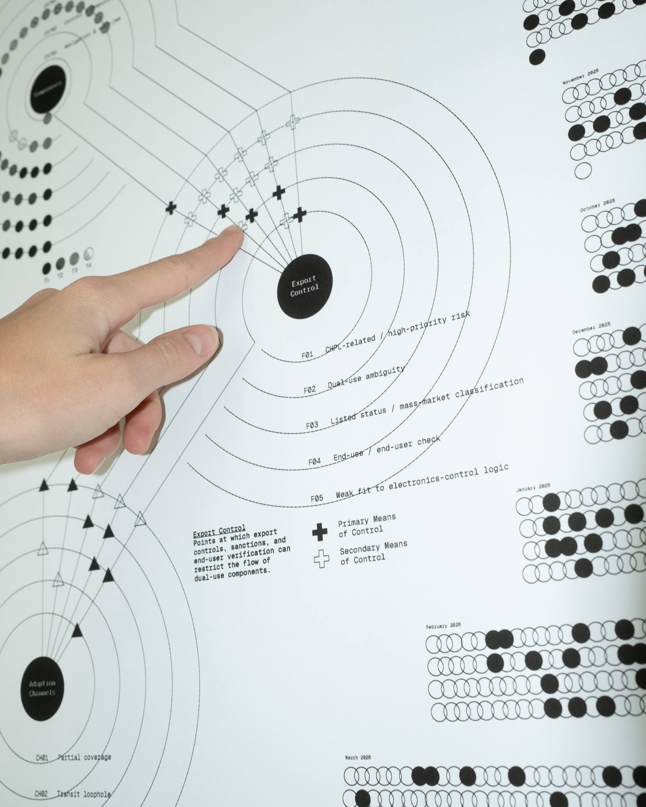
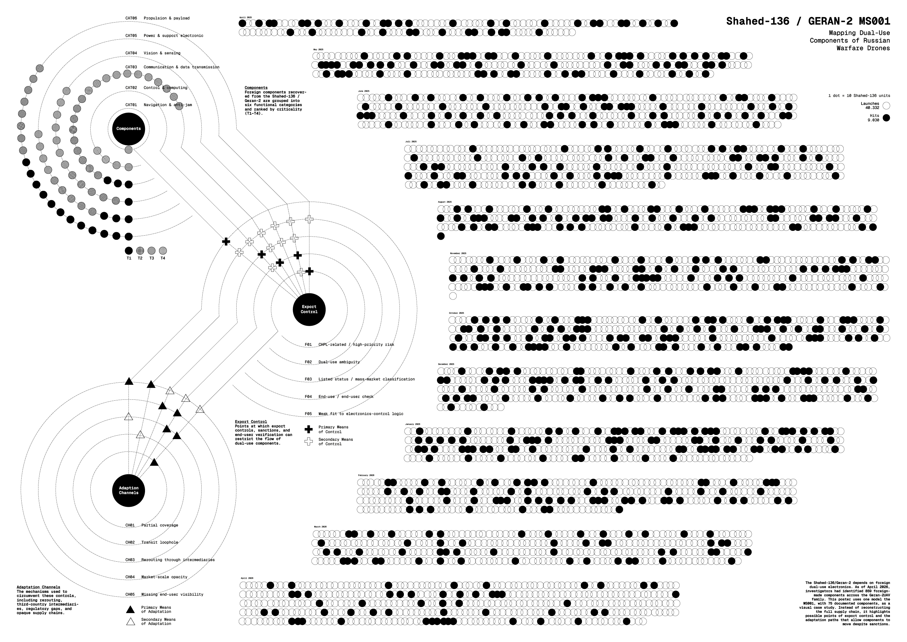
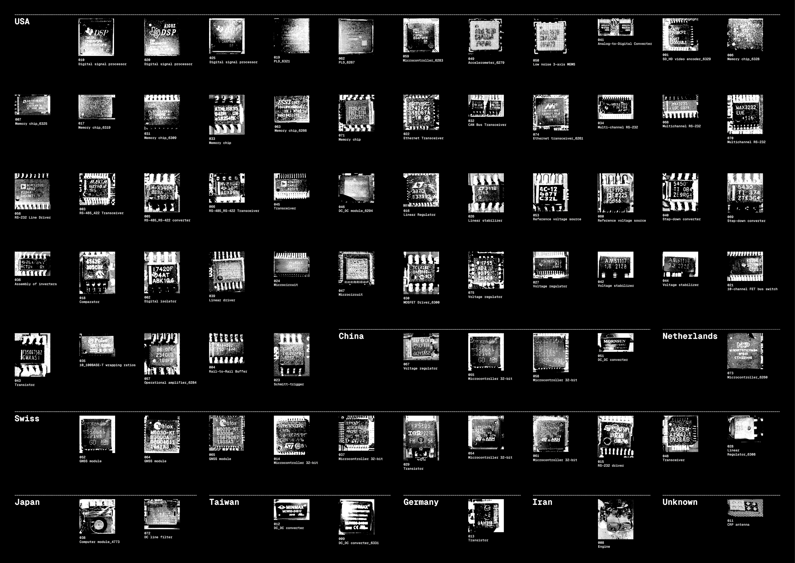
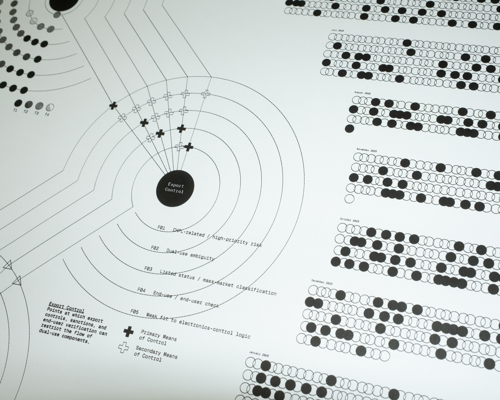
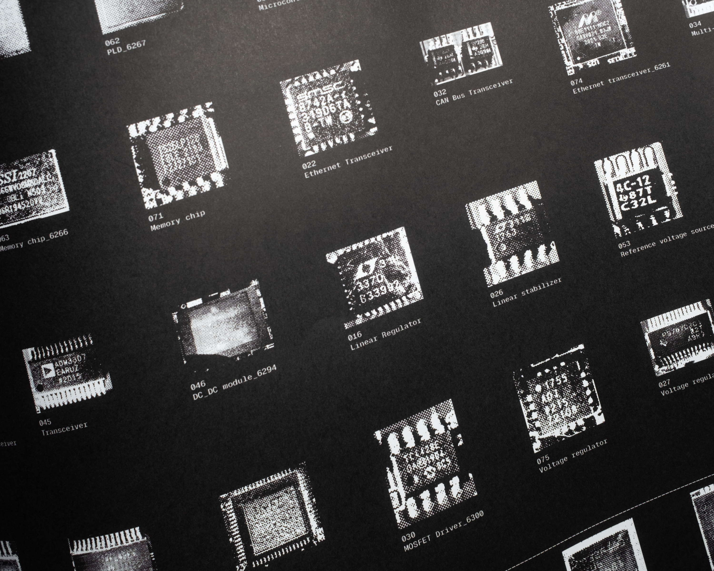
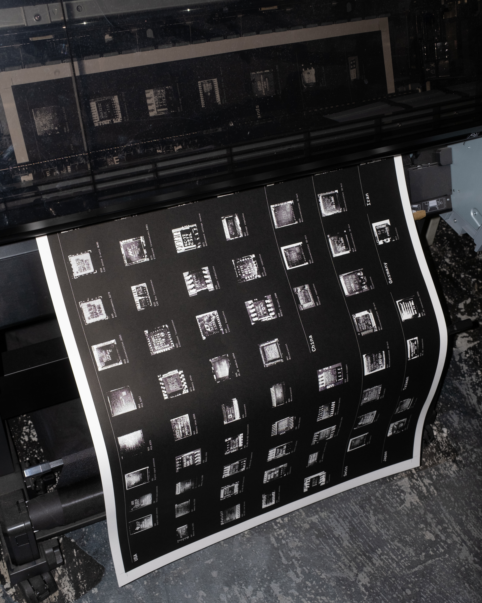

Mapping Dual-Use Components of Russian Warfare Drones
Many electronic components used in everyday devices can also become part of military systems. This project examines foreign components found in the Shahed-136 / Geran-2 drone family and explores the role of dual-use technologies within a weapon system. Using the MS001 model as a case study, the components are organized by function and importance, from navigation and control to communication, power supply, propulsion, and payload. By April 2026, 859 foreign-made components had been documented across the Geran-2 family. The visualization also shows where export controls can intervene and where gaps appear, such as rerouting through intermediaries, unclear end users, and the widespread availability of mass-market electronics. The project presents the drone not as a single object, but as a network of technologies, controls, and dependencies. Done with supervision by Robin Coenen for course Komplexe Bilder in UdK Berlin Oleksandr Bichuk and Anna Lena Daerber